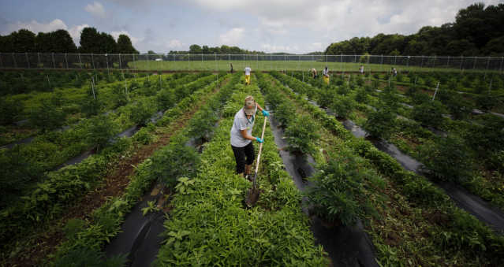
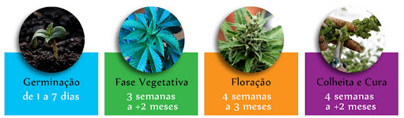
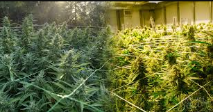
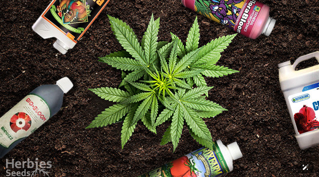
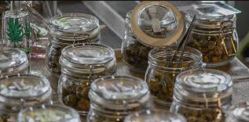
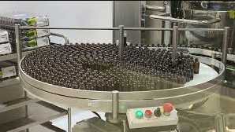

🌾 Cultivo e Produção da Cannabis
O cultivo da cannabis é uma prática que envolve cuidados específicos com o solo, iluminação, irrigação e controle de temperatura. A planta pode ser cultivada tanto em ambientes internos (indoor) quanto ao ar livre (outdoor), cada um com suas vantagens e desafios.
🌱 Etapas do cultivo
O processo de cultivo da cannabis passa por várias fases: germinação das sementes, fase vegetativa, floração e, por fim, a colheita. Cada fase exige nutrientes, fotoperíodos e cuidados distintos.
O tempo médio do ciclo completo varia entre 3 a 5 meses, dependendo da genética da planta e das condições de cultivo.
💡 Cultivo indoor vs. outdoor
O cultivo indoor permite maior controle das condições ambientais e segurança, sendo ideal para quem busca qualidade e discrição. Já o cultivo outdoor é mais barato, aproveita a luz solar natural e pode resultar em colheitas maiores, mas está sujeito ao clima e pragas.
🧪 Fertilizantes e cuidados com o solo
Para garantir plantas saudáveis, é essencial usar substratos bem drenados e ricos em nutrientes, além de fertilizantes equilibrados com nitrogênio (N), fósforo (P) e potássio (K). O pH ideal do solo deve variar entre 6.0 e 7.0.
⚙️ Processos pós-colheita
Após a colheita, os buds passam por um processo de secagem e cura, fundamentais para preservar sabor, aroma e potência dos canabinoides. A cura pode durar de duas semanas a dois meses, dependendo do método.
📦 Produção em larga escala
Em países onde o cultivo é regulamentado, como Canadá e Uruguai, existem fazendas especializadas na produção em larga escala, com controle rigoroso de qualidade, rastreabilidade e certificação de pureza.
🔍 Curiosidades sobre o cultivo
- 🌡️ A temperatura ideal para o cultivo gira em torno de 22°C a 28°C.
- 💧 O excesso de água pode causar root rot (apodrecimento das raízes).
- 🧬 A cannabis pode ser cultivada por sementes ou clones (estacas).
- 🌕 Algumas variedades florescem com base no ciclo lunar.